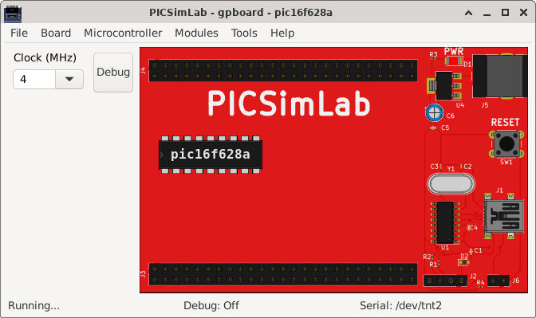
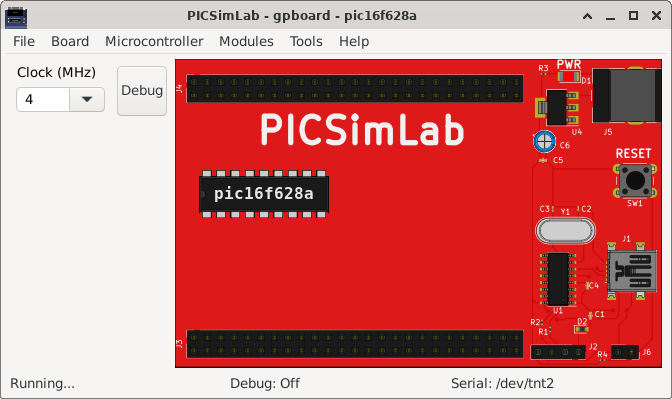

5.2 gpboard
It is a generic board only with reset, serial and crystal circuits and support to multiple microcontrollers of gpsim.

It is a generic board only with reset, serial and crystal circuits and support to multiple microcontrollers of gpsim.
